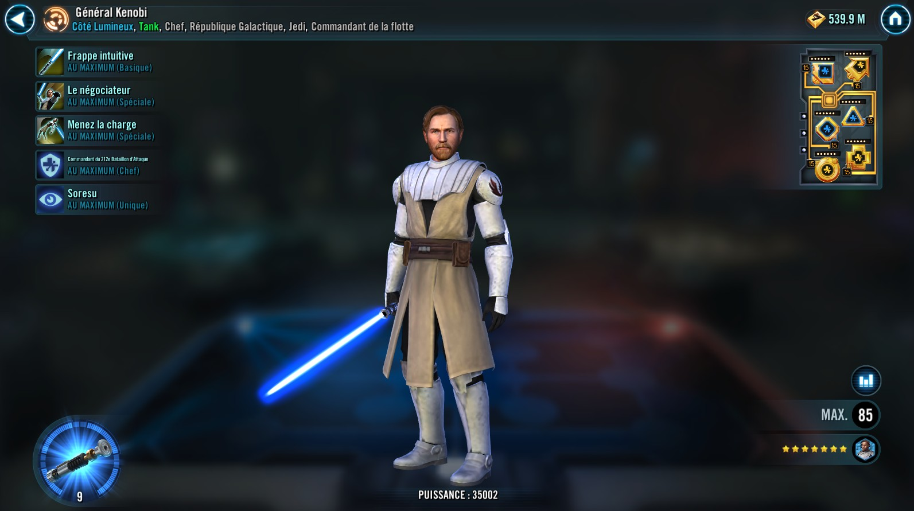

General Kenobi
Vigorous Jedi Tank who gains Foresight, dispels debuffs to grant buffs, and calls buffed allies to Assist

Basic Attack: Intuitive Strike
Deal Physical damage to target enemy with a 75% chance to grant Foresight to a random ally that doesn't have it for 2 turns. If all allies are buffed, deal double damage.
1st Special: The Negotiator (cooldown: 4)
Dispel all debuffs from all allies and grant them the opposite buffs, if any, for 2 turns. All allies that were not debuffed gain Retribution for 3 turns. General Kenobi gains 60% Turn Meter.
2nd Special: Lead the Charge(cooldown: 4)
Deal Physical damage to target enemy and grant a random other ally Offense Up for 2 turns. Call all other buffed allies to assist, dealing 30% less damage. Jedi Knight Anakin and Ahsoka Tano (Snips) are not affected by this damage penalty.
Leader Ability: 212th Attack Battalion Commander

Jedi and Clone allies have +30% Max Health and +70% Defense. After a Jedi ally uses a team healing Special ability, all other allies at full health are called to Assist, dealing 50% less damage. When a Clone ally uses a Special ability they gain a buff (Attacker: Advantage, Support: Stealth, Tank: Taunt) for 1 turn.
Unique Ability: Soresu
At the end of his turn, General Kenobi has a 65% chance to gain Foresight for 2 turns.\n\n Whenever another ally is critically hit, if General Kenobi is alive, they gain Critical Hit Immunity for 1 turn and General Kenobi Taunts for 1 turn.\n\n If all allies are Galactic Republic, General Kenobi Taunts for 1 turn whenever another Galactic Republic ally loses any Protection Up.